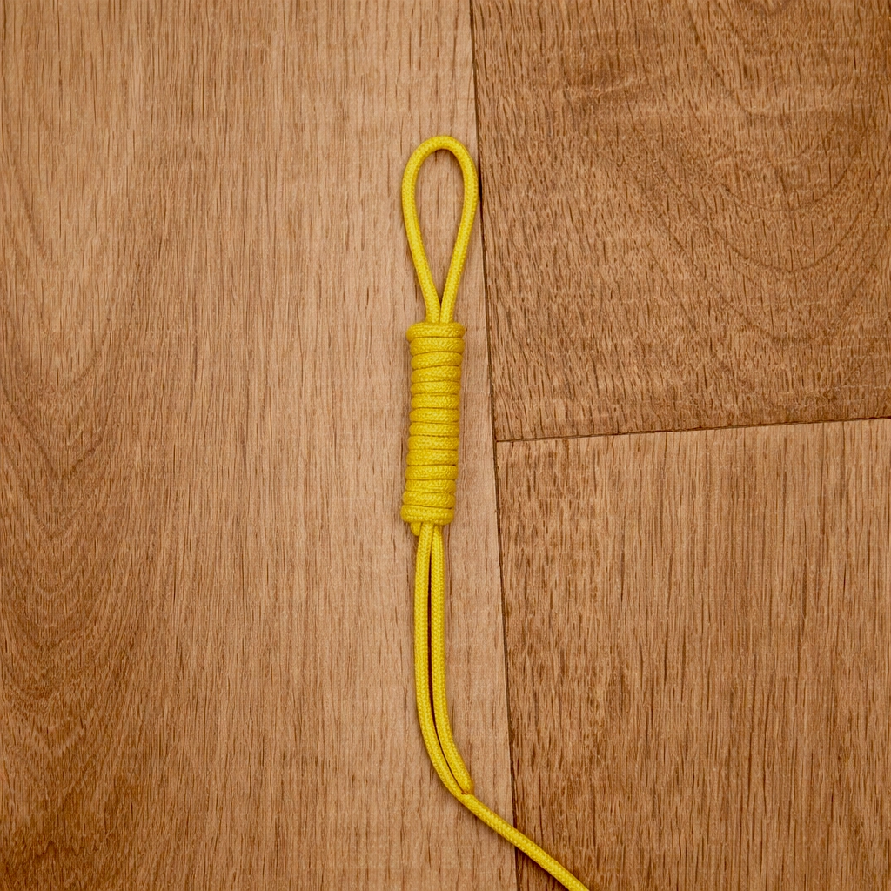
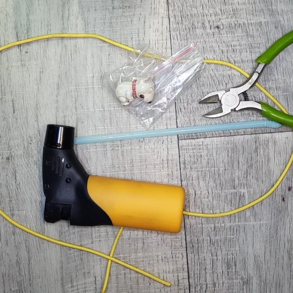
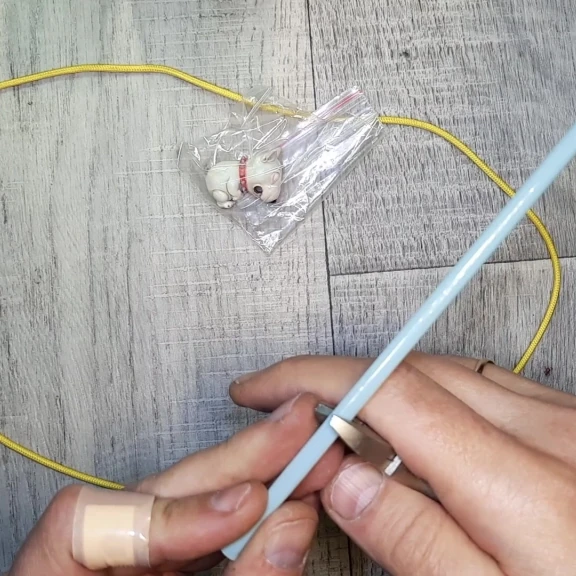
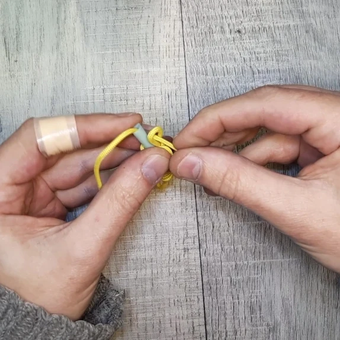
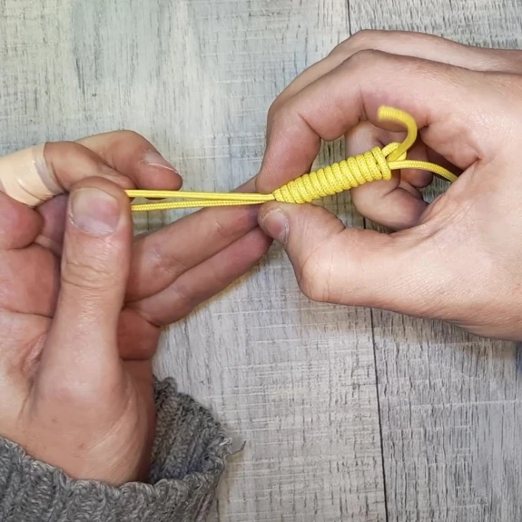

Если нужен самый простой темляк из паракорда для ножа, фонаря или небольшого инструмента, здесь достаточно одного базового узла: без бусины, без отдельного фиксирующего узла и без длинного плетения.
Ниже показан именно такой стартовый вариант. В темлячной теме этот способ часто называют петлёй Линча, но здесь он подан не как отдельная сложная техника, а как самый короткий путь к первому рабочему результату: минимум подготовки, понятная логика и быстрый готовый темляк.
Эта страница не про все возможные варианты сразу. Её задача проще: спокойно собрать первый темляк, понять базовую механику и уже потом решить, нужен ли более декоративный вариант с бусиной, плетением или другим завершающим узлом.
Содержание
- Что понадобится
- Пошагово: как сделать простой темляк
- Полезные замечания
- Следующий шаг: бусина и более собранное завершение
- Другие статьи по теме
- Видео процесса
- Частые вопросы
Что понадобится
- Шнур. Подойдёт тонкий паракорд, который нормально держит форму после затяжки.
- Ножницы или кусачки. Чтобы аккуратно подрезать лишнее.
- Зажигалка. Для чистой обработки концов.
- Короткая пластиковая трубочка. Она нужна как временная направляющая для намотки.
Если сначала хочется разобраться с самим материалом, полезно посмотреть что такое паракорд и какие инструменты нужны. А здесь уже идём прямо в самый простой практический вариант.
Пошагово: как сделать простой темляк
Шаг 1Подготовьте всё, что понадобится

Для этого варианта нужен только шнур, короткая трубочка, ножницы или кусачки и зажигалка. Никакой бусины и дополнительного завершающего узла здесь не требуется.
Трубочка нужна как временная направляющая. На ней собирается намотка, которая потом и станет компактной рабочей частью темляка.
Шаг 2Сложите шнур и соберите стартовую заготовку
Сначала шнур нужно сложить так, чтобы получилась основа будущего темляка. Затем подрежьте трубочку под нужную длину и поставьте её в рабочую зону.
На этом этапе важно уложить всё аккуратно: если стартовая заготовка собрана ровно, дальше намотка идёт заметно проще и без лишнего перекоса.



Здесь же важна и логика фото: по ним удобнее всего увидеть стартовую сборку целиком, поэтому перегружать шаг лишними почти одинаковыми кадрами не нужно.
Сделайте первые витки и продолжите намотку
После того как основа собрана, начинайте наматывать шнур виток за витком. Первые витки особенно важны: именно они задают геометрию всей намотки.
Дальше просто продолжайте работу с одинаковым натяжением, стараясь не оставлять зазоров и не перекашивать цилиндрическую форму.


Здесь тоже лучше оставить только самые полезные кадры: старт намотки и момент, когда уже видно, что рисунок пошёл ровно.
Сформируйте верхнюю петлю и аккуратно подтяните узел

Теперь нужно вывести финальную петлю и постепенно подтянуть всю конструкцию. Делать это лучше без резких рывков: сначала выровнять петлю и края намотки, а уже потом уплотнить узел окончательно.
Если на этом этапе всё сделать спокойно, получается ровная компактная основа простого темляка с верхней петлёй и аккуратной намоткой.
Шаг 5
Получите готовый темляк
На этом базовый вариант уже готов. Здесь нет бусины, нет отдельного нижнего узла и нет дополнительной фиксации — только самый простой рабочий темляк на основе одного узла.
Именно поэтому этот способ хорош как первый опыт: короткий путь от шнура к готовому результату, без лишних промежуточных усложнений.
Полезные замечания
- Не спешите с первыми витками. Они задают геометрию всей намотки.
- Трубочку режьте под задачу. Так легче получить нужную длину рабочей части.
- Подтягивайте узел постепенно. Тогда витки меньше разъезжаются.
- Если нужен только рабочий вариант, можно остановиться уже на этом этапе. Для первого темляка этого вполне достаточно.
- Не перегружайте шаги лишними фото. В базовой инструкции важнее понятная логика, чем максимальное количество почти одинаковых кадров.
Следующий шаг: бусина и более собранное завершение
Если хочется сделать вариант поинтереснее, следующий шаг очень простой: тот же самый принцип + бусина + более собранное завершение.
Для этого уже лучше открыть отдельную страницу про петлю Линча на темляке, где показано продолжение: установка бусины, соединение концов и более законченный декоративный вариант.
посмотреть все изделия, разобраться, что такое темлячная бусина или перейти в сообщество VK мастерской 102%, если нужен совет, какая бусина подойдёт под Ваш темляк.
Другие статьи по теме
Видео процесса
В видео показана та же логика сборки: стартовая заготовка, намотка, формирование верхней петли и готовый простой темляк.
Частые вопросы
Как сделать самый простой темляк из паракорда?
Самый простой вариант — использовать один базовый узел без бусины и без отдельного фиксирующего узла. Именно такой вариант и показан на этой странице.
Подойдёт ли такой темляк для ножа?
Да. Такой вариант подходит для ножа, фонаря, молнии, небольшого инструмента и других задач, где нужен короткий компактный подвес.
Нужна ли бусина для первого темляка?
Нет. Для первого опыта бусина вообще не обязательна. Её лучше добавить уже следующим шагом, когда сама базовая логика стала понятной.
Почему здесь не используется отдельный фиксирующий узел?
Потому что в этой базовой версии весь смысл как раз в простоте: один узел уже даёт готовый темляк.
Зачем в этом способе нужна трубочка?
Трубочка работает как временная направляющая. На ней проще собрать ровную намотку, а потом аккуратно подтянуть узел без сильных перекосов.
Где посмотреть готовые бусины или задать вопрос по подходящему варианту?
Можно перейти в каталог изделий или написать в сообщество VK мастерской, если нужен совет по выбору бусины или готового варианта.
Что делать дальше, если хочется более интересный вариант?
Логичный следующий шаг — добавить бусину и более собранное завершение. Для этого как раз и нужна отдельная страница про петлю Линча на темляке.